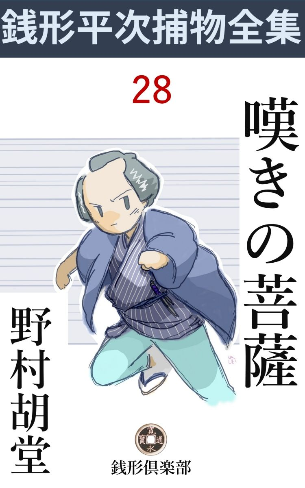
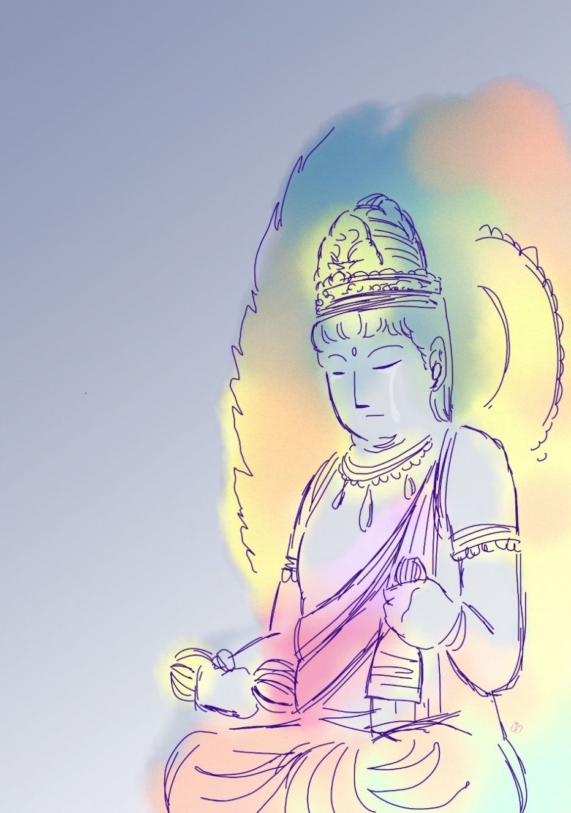

| 嘆きの菩薩: 銭形平次捕物全集第28話 (銭形倶楽部) | |
| 野村胡堂 | |
| ZENIGATA CLUB (2018) | |

一
「親分、あれを聞きなすったかい」
「あれ？ 上野の時の鐘 なら毎日聞いているが------」
銭形平次は指を折りました。丁度辰刻 を打ったばかり、お早う------とも言わず飛込んだ、乾分 のガラッ八の顔は、それにしては少しあわてております。
「そんなものじゃねえ、両国の小屋------近頃評判の地獄極楽の活 人形 の看板になっている普賢 菩薩 様 が、時々泣いているって話じゃありませんか」
一流の早耳、八五郎は又何か面白そうな話を聞込んで来た様子です。
「地獄極楽の人形は凡作 だが、招きの普賢菩薩が大した名作だってね」
「作人は本所緑町の仏師又六、大した腕のある男じゃねえが、あの普賢菩薩だけは、後光が射すような出来だ。その上木戸番のお倉てえのが滅法 いい女で、小屋は割れっ返るような入 ですぜ」
「お倉と普賢菩薩を拝んで、極楽も地獄も素通りだろう。そんな野郎は浮ばれねえとよ」
「全くその通りさ、親分、------その普賢菩薩が、時々涙を流しているから不思議じゃありませんか、岡っ引冥利 、一度は見て置かなくちゃ------」
「手前 はもう五六遍見ているんだろう。懐の十手なんか突っ張らかして、ロハで小屋を荒して歩いちゃ風が悪いよ」
「冗談でしょう、親分」
ガラッ八をからかいながらも、銭形の平次は支度に取りかかりました。両国の活人形が泣いていると言うのは、どうせ勧 進 元 のサクラに言わせる細工で、ネタを洗えば人形の眼玉へ水でも塗るんだろう------位に思ったのですが、それにしても、少し細工が過ぎて、なんとなく見遁し難いような気がしたのです。
「出かけようか、八」
「へエ------、本当に行って見る気ですか、親分」
「岡っ引冥利、お倉と普賢 菩薩 は拝んで置けと------たった今手前が言ったじゃないか」
「お倉だけは余計ですよ、------ところで親分、行って見るのはいいが、朝でなくちゃ泣いていませんよ」
「寝起 の機嫌の悪いお倉だ」
「お倉じゃねえ、泣くのは仏様で」
「あ、そうそう」
平次はまだからかい面ですが、気の合った親分乾分は、こう言った調子で話しながら、お互いの微妙な心持を、残すところなく伝える術 を知っているのでした。
「明日の朝にしちゃどうでしょう、親分」
ガラッ八。
「早い方がいいぜ、明日行って見たら普賢菩薩が笑っていたなんてえのは困るだろう。そうなると、岡っ引より武者修業を差向けた方がいい」
「口が悪いな親分、もっともここから向う両国までは一と走りだから、涙の乾く前に着くかも解らない」
二人は無駄を言いながら、朝の街を飛ぶように、両国橋を渡って、地獄極楽の見世物の前に立った時は、もう気の早い客が、五六人寄せかけておりました。
「いらっしゃい、御当所名題の地獄極楽活人形、作人の儀は、江戸の名人雲竜 斎 又六、------八熱八寒地獄、十六別所、小地獄、あわせて百三十六地獄から、西方極楽浄土まで一と目に拝まれる。一流活人形はこちらで御座い」
木戸番はお倉という新造、塩辛声 の大年増と違って、こいつは水の垂れるような美しさを発散しながら、素晴らしい桃色の次 高 音 でお客を呼ぶのでした。
襟の掛った少し地味な銘仙、襦子 の帯、三十近い身柄ですが、美しさや声の韻 から言うと、精々十九か二十歳でしょう。白粉ッ気なしの疣 尻 巻 、投げやりな様子も、一種の魅力で、両国中の客をここへ吸い寄せたのは、何としても普賢菩薩のせいばかりではないようです。
「八、大層な木戸番だな」
と銭形の平次も少し感に堪えます。
「ね、親分」
八五郎のガラッ八は、呑込み顔に顎をしゃくると、平次の後から狭い木戸を通りました。
二
「成程、これは凡作だ」
平次も驚きました。地獄極楽の活人形は話に聞いた通りの凡作で、凄味も有難味もありません。
「閻魔 大王がくしゃみ をしそうですぜ」
ガラッ八は袖を引きます。
「馬鹿野郎、そんな罰 の当ったことを言っちゃならねえ」
「菩薩方 の張り店と来た日にゃ親分------」
「黙らないかよ、八」
二人はようやく評判の普賢菩薩の前にたどり着いておりました。
「これは大したものだ、まるで作が違う」
白 象 に乗った、等身大の菩薩像は、見世物小屋の表の方、囃子 方 の陣取った中二階の下あたりに据えてあります。
少し彩色は濃厚過ぎますが、実に非凡の出来栄え、右手に金剛杖を持ち、左手に金鈴を執った慈悲の御姿、美妙と言おうか、端麗と言おうか、あまりの見事さに平次も暫らくは言葉もありません。

「親分、あの仏様の眼を見てやって下さいよ、少し濡れているでしょう」
とガラッ八。
「眼ばかりじゃねえ、宝冠の瓔珞 から、襟も肩もぐっしょりだ。頭の上から涙を流すのは、仏様にしても可 怪 しくはないか、八」
「へエ------」（編注）
「冠 も頬も襟も汚れているのは、勧 進 元 の細工にしちゃ念入り過ぎるぜ、それに、夜が明けてからもう二た刻も経っているのに、涙の乾かねえのも不思議じゃないか」
平次は稼業柄で、妙なところへ気が付きます。
「------」
「八、手前涙の味を知ってるかい」
「近頃はトンと泣かねえが、子供の時お袋に叱られて泣いていると、口へ涙が流れ込んだことがありますよ。汗 みたいな塩っ辛い味だと思ったが------」
ガラッ八もこう言うより外はありませんでした。普賢菩薩の涙を見上げている平次の態度が、洒落 や冗談とは全く縁のない生真面目なものだったのです。
「手前も仏様の涙を舐 めた事はあるめえ、ちょいとやって見な」
「あっし が？」
「人間の涙は塩っ辛いが、勧進元の細工なら味があるわけはねえ、本当に仏像の涙なら甘 露 の味がするかも解らないじゃないか」
「へエ------」
「幸い朝のうちで小屋の中はガラあきだ。今のうちにちょいと舐めてみな」
「親分、そりゃ本当ですかい」
ガラッ八も驚きました。日頃言い付けに反いたことのない親分の言葉ですから、大概の事なら聞くつもりですが、仏様と言っても、見世物小屋の活人形の眼に溜った、得体の知れない水を舐めて見ろと言われたのには驚いたのです。
「嫌かい」
「嫌じゃありませんが------ね」
「岡場所のドラ猫見たいな妓 の頬ぺたを舐めるんじゃねえ、これでも仏様だ。誰が笑うものか、安心してやって見な」
「安心していますよ、------驚いたな、どうも」
「嫌なら止すがいい、俺がやる」
銭形平次ともあろう者が、本当に中二階へ登りそうな様子になるのです。
「じょ、冗談じゃねえ、銭形の親分がそんな事をした日にゃ、江戸中の物笑いだ。あっしがやりますよ、やりますとも」
親分思いの八五郎は、こうなるともう悪びれませんでした。普賢 菩薩 の涙を舐めてみろと言う平次の言葉には、何か重大な底のあることは、もう疑う余地もなかったのです。
八五郎は黙って梯子 を登ると囃子 方 の中二階へバアと顔を出しました。
「お前さん、そこへ登っちゃ困るじゃないか」
後ろから引き下ろしそうになる男は、八五郎が懐からちょいと、十手を覗かせるとそのまま黙って引込んでしまいました。
疎 になっている客は、元より八五郎の飛んでもない冒険の意味などを知る筈もなく、木戸番のお倉は、委細構わず、素晴らしい次 高 音 を響かせて、両国中の客を、鉄片を吸う磁石 のように、ここへ集めております。
中二階に登って及び腰になると、丁度仏像の身体に手が届きます。
「------」
仏像の涙を薬指につけて、ほんの少しばかり舐 めた八五郎の顔を、平次は世にも面白そうに見上げました。
「どうだ、八、塩っ辛いだろう」
降りて来たガラッ八を迎えるように、平次はこう言うのでした。
「どうしてそれが？」
「白く塩が溜っているじゃないか、あれが塩っ辛くなきゃア、どうかしているよ」
三
それから三日目。
「親分、大変ッ」
それとはなしに、東西両国を見張らせていたガラッ八が、鉄砲玉のように平次のところへ飛込んで来ました。
「どうした、八、普賢菩薩が笑い出したか」
「そんな事なら驚かねえが、今度は殺しだ」
「何？」
平次はピンと弾 き上げられたように坐り直しました。
「両国には相違ねえが、あの小屋からずっと離れた亀沢町の路地に若い男が、殺されているが、困ったことには見知り人 がねえ」
「行って見よう、死骸はまだそのままだろうな」
「検屍 が済むまでは、指も差させねえように、町役人に頼んで来ましたよ」
「そいつはいい塩梅だ」
平次とガラッ八はそのまま両国へ------。
人混みを掻き分けて入ると、亀沢町のとある路地に、紅い鹿 の子 絞 の扱帯 で首を絞められた若い男が虚 空 を掴んで死んでいるのでした。
唐 棧 の素袷、足袋跣足 のまま、雪駄を片っぽだけそこに放り出して、少し天眼に歯を喰いしばった死顔の不気味さ、男が好いだけに凄味がきいて、赤い扱帯に、蒼い顔の反映も、なんとなくゾッとさせるものがあります。
「おや、銭形の」
「三輪 の親分でしたか」
嫌な者に逢ったとは思いましたが、平次はさすがに、縄張にこだわる男ではありません。
「この辺は石原の親分の縄張だが、銭形のは利助兄 哥 に頼まれていなさるてえじゃないか」
「飛んでもない」
平次は少し尻込みしました。やくざや遊び人と違って、岡っ引御用聞に縄張などがあるわけはなかったのです。
「それじゃ俺が出しゃ張っても、文句はあるまいね」
「それはもう、三輪の親分、お互いにお上の御用を承わる身体だから、一刻も早く犯人を挙げさえすりゃいいわけで」
「下手人 はもう挙がったよ」
「？」
三輪の万七のニヤリとする顔を見ると、ガラッ八はそっぽを向いてペッと唾 を吐きました。
「この上、銭形のが来たところで、気の毒だが仕事はあるめえよ」
万七は言いたい放題の事を言うと、背を向けて人混みの中へ顎 をしゃくりました。
「親分、参 りましょうか」
乾分の者が二人、物々しくも縄を打って引いて来たのは地獄極楽人形の小屋にいる美しい木戸番、あの両国中へ桃色の次 高 音 を撒 き散らしている、お倉だったのです。
「銭形の親分さん、お助け------」
お倉は摺れ違いざま、平次の耳に囁きました。細 そりした身体が、後ろ手に縛られると一倍萎 れて、消えも入りそうなのが、何とも言えない痛々しさです。
「------」
平次は黙ってそれを見送りました。が、三輪の万七とお倉の姿が見えなくなると、
「八、手を貸せ、少し調べてみよう」
死骸の傍に立ち寄ると、物馴れた様子でそれを抱き起しました。
「親分、大変な怪我じゃありませんか」
とガラッ八。
「それだよ、見ろ、八、身体中傷だらけじゃないか」
死骸の帯を緩めて、双肌 脱がせると、背から尻へかけて、一面の青 痣 、それに相応して着物の破れなどのあるのを確かめると、
「袋叩きにされたんだね、女一人の仕事にしちゃ、少し念が入り過ぎだよ」
平次はそんな事を言いながら、髷 節 の中から、足の下まで、恐ろしく丁寧に調べております。
「雪駄の片っ方がありゃ、下手人の見当はすぐ付きますね、親分」
とガラッ八。
「馬鹿だね、その雪駄の片っ方はお倉の家にあったのさ、扱帯 がお倉のだというだけじゃ、三輪の万七ともあろう者が、女を縛るわけはねえ」
「成程ね、お倉の家------てえのは、いずれこの辺でしょうね」
「細工の器用なところを見ると、すぐそこってことはあるまいが、いずれ十軒とは離れちゃいまい、訊いてみな」
平次が言うまでもありません。好奇心でハチ切れそうになっているお立会の衆は、路地を入って三軒目がそれで、母親と二人で住んでいるお倉が、あれほどの縹緻を持ちながら、茶屋女にも町芸妓にもならず、進んで両国の見世物小屋へ、ここから通っているのだと教えてくれました。
「身扮 から、身体の様子、鑿胝 の具合を見ると、居職の------それも多分彫 物 師 と言うところだろう------見知人がある筈だ、その辺で当ってみな」
「へエ------」
八五郎は一とわたりお立会の衆を眺めましたが、馴れた眼で見当を付けると、何となく落着き兼ねた中老人をとらえて、
「お前さんは知っていなさるだろう、関 り合いなんかにはしない、殺された男の身許だけでも教えてくれ」
単刀直入に訊いてみました。
「本当に関り合いになりませんか」
「それはもう」
この頃の人が、どんなに事件に関り合いになるのを恐れたか、今の人には想像も付かない心理があったのです。
「仏師 の勘兵衛さんですよ」
「エッ」
「二代目一刀斎勘兵衛、------若いが名人と言われた人です」
「そりゃ大変だ」
銭形の平次が乗り出した時は、中老人は早くも人混みの中に姿を隠してしまったのでした。
四
平次はすっかり緊張 して、検屍の役人が来るまでの、たった四半刻ばかりを、恐ろしく能率的に使いました。
「親分、あのお倉と言うのは、勘兵衛の元の女房だったそうですよ」
早耳のガラッ八は、一寸姿を隠した間に、これだけの事を聞き込んで来ました。
「どこでそんな事を聞き出したんだ」
「地獄極楽の活人形を彫った作人雲 竜 斎 又六の弟子は皆な知ってまさア」
「それを承知で、又六はあの小屋に使っていたのか、------勘兵衛と又六は商売敵で、恐ろしく仲が悪かった筈だが」
「又六はそんな事を知っていたか知らなかったか、兎に角弟子達がよく知っていて、師匠の又六が小屋へ出るたんびに、お倉へ優しい声をかけるのを、蔭で笑っていましたよ」
「そうか」
「そう解れば、勘兵衛を殺したのは、やはりお倉じゃありませんか」
とガラッ八。
「勘兵衛がお倉を殺すなら解っているが、お倉が勘兵衛を殺すのはどういう訳だ」
「世間じゃ、お倉が勘兵衛を捨てて飛出したって言うが、その実、勘兵衛がお倉を追い出したのかも解りませんぜ」
「そんな事はどうでもいいが、------女が一人で若い男を袋 叩 きに出来るかい」
「袋叩きにしたのは他の者で、ヒョロヒョロになってここへ来たところをお倉が殺したとしたら？」
「そんな事があるものか、雪駄 が片っぽお倉の家にあると言うのに、勘兵衛の足袋は両方とも底が綺麗だぜ」
「あッ」
「そんな事を言っていると、三輪の親分に笑われるばかりだ------」
「それじゃ親分」
「勘兵衛を殺したのは大の男さ、------それより、地獄極楽の小屋へ行って、見付けたいものがある、------丁度お役人が見えたようだ、ここはお任せして引揚げようか」
「------」
平次の明察の底の深さを知っているガラッ八は、そのまま黙って後ろに従いました。そこから五六丁、小屋は尾上町 の角、川沿いの空地に区画を施 した、半永久的の粗末な建物だったのです。
二人が小屋へ入った時は、まだ木戸を開けたばかり、お倉に比べると一向魅力 のない大年増が、型の如く塩 辛 声 を振り絞っておりますが、どうした事か、更に客の入る様子はありません。
「御免よ」
「へエ、いらっしゃい」
「客じゃねえ」
「おや、銭形の親分さん、お見それ申しました、どうぞこちらへ」
「又六師匠はここへ来なさるかえ」
「毎日参 りますが、大概夕方で」
「収入 の勘定だろうね、まア繁昌で結構だ」
「へエ------、どういたしまして」
又六の弟子で、小屋の取締りを兼ねている、中年者の巳 之吉はヒョコヒョコと卑 屈 らしく小腰を屈めました。
「お倉が縛られたってね」
平次はその顔を真っ直ぐに見詰めながら、ズバリと言って退けました。
「へエ、元の亭主を殺したんだそうで」
「大層早耳じゃないか、俺も今それを聞き込んだばかりなんだが」
「------」
「まア、いいや、ちょいと小屋の中を見せて貰おうか」
「へエ------」
ズイと入ると、中は空っぽも同然、地獄の活人形に朝の陽が射し込んで、何となく不気味なうちにも、拙 劣 な細工が醸し出す、滑稽な趣 があります。
平次はそんなものには眼もくれず、真っ直ぐに普賢 菩薩 に近づきました。傍へ寄って触ってみると、白象は蝋 細工 に綿を着せたもので、恰好は出来ておりますが、上に乗った普賢菩薩の、優れた尊像とは似てもつかぬ誤 魔 化 し物です。
「ガラッ八、その踏台 を持って来てくれ」
「へエ------」
象の下に踏台を据えさせると、平次はその上に乗った菩薩を少し上げ、台座の下から覗きました。
「この銘 は一度書いたのを削 って又書き入れたようだね」
「一向存じません」
巳之吉は酢っぱい顔をしております。
「八、その辺に手桶 があるだろう、捜してみな」
ガラッ八を中二階へやって、平次は下から声を掛けました。
「捜すまでもありませんや、ここにありますぜ」
とガラッ八。
「その中に水が入っているだろう、ちょいと舐 めてみてくれ」
「へエ------」
「ほんの少し塩っ辛いだろうと思うが」
平次は妙な事を言い出しました。
「あッ、これはやっぱり仏様の涙ですかい」
「そうだよ」
「恐ろしく涙を出したんだね」
五
「これは銭形の親分、御苦労様で」
小肥 りの中年男が、丁寧に平次へ挨拶しました。
「お前さんは？」
「雲竜斎------え、その又六で御座いますが」
「あ、雲竜斎師匠でしたか、飛んだ災難で」
「有難う御座います、------この小屋も半分はお倉のお蔭で繁昌していたようなもので、当分代りを捜すまでは、人気を取り戻せそうもありません」
「なアに、普賢 菩薩 の評判が大したものだから、そんな心配もありますまいよ」
「有難う御座います」
「その人気を独り占 にしている菩薩様が少し汚れたようですね、あれはやはりサクラを使って泣かせるんでしょう------」
「親分、御冗談を」
又六は少し照れ臭い顔をしました。が、この顔には、どんな感情も紛 れさせる、不 断 の微笑が、さざ波のように動いているのです。
「ところで師匠、お倉は勘兵衛の元の女房だという話ですが、お前さんそれを承知で雇 いなすったかい」
と平次、さり気ないうちにも、次第に問題の核心 に触れて行きます。
「少しも存じませんよ、ツイ今しがたそれを聞かされて、びっくりしていたようなわけで、へッ、へッ」
「お前さんは、大層お倉に親切だったって言う噂だが------」
「親分、からかいなすっちゃいけません。そんな馬鹿な事が------」
「まアいいやな、ハッハッハッ」
平次は他愛 もなく笑いながら、軽い心持で小屋を出ました。
川岸 ッぷちを相生町の 方へ少し行くと、物蔭から不意にガラッ八が飛出します。
「ありましたよ、親分、主のない小舟が一艘、小屋の後ろに繋 ぎっ放しで------」
少し獅子っ鼻が蠢めきます。
「そうだろうと思ったよ、勘兵衛の家は浜町だ。橋番所があるから、明方表から小屋へは忍び込めねえ筈だ」
「見透 しだね、親分」
「おだてちゃいけねえ」
「下手人は解りましたか」
「大方解ったつもりだが、証拠というものが一つもねえから、捕まえることもどうすることも出来ない」
平次は深々と腕を拱 きました。
「誰です、その下手人は」
「手前 だけに言って置くが、あの肥っちょの、ニヤニヤした野郎だよ」
「えッ、雲竜斎又六？」
「黙っていな、大きな声を出すと鳥が飛ぶぞ、暫らく万七兄 哥 に楽しませて置け」
六
銭形の平次はそれから必死の活動を始めました。
地獄極楽の小屋の者は、巳 之 吉 初め一人残らず調べ上げた上、お倉の母親から、雲竜斎又六の動き、一刀斎勘兵衛の家まで、念には念を入れて捜 し抜きましたが、その晩、お倉の家へ勘兵衛らしい男が訪ねて来ると、お倉は母親を原 庭 の叔母のところへ泊りにやった------という以外には、何にも得るところもなかったのです。
平次が一番怪しいと思った又六は宵のうちに緑町の自分の家へ帰って、それっ切り急ぎの仕事に取かかり、夜中まで鑿 を使っていたというのは、内弟子も近所の者も口が合って少しの疑いを挾 む余地はありません。
調べて来れば、やはり一番怪しいのはお倉と言うことになりますが、肝腎のお倉は三日三晩の責めにも我慢を通して、知らぬ存ぜぬの一点張りです。
「自分の扱帯 で殺して、そのままにして置くのは可笑しいではないか」
最後に与力の笹野新三郎にそう言われると、三輪の万七もこの上女を責めようはありません。
が、事件は四日目になって、思いもよらぬ方面へ発展してしまいました。
「親分、又六が殺 られましたぜ」
「何？ そんな馬鹿な事があるものか」
ガラッ八の報告を聞いた時、平次は危うく日頃の冷静さを失うところでした。
勘兵衛殺しの下手人と睨んで、一生懸命証拠の蒐集 に浮身をやつしている矢先、肝腎の又六が殺されてしまっては、平次は全く背負 投 を喰わされたようなものです。
「自害じゃあるまいね」
「鑿 で背後 からやられる自害があるでしょうか、親分」
「------」
銭形の平次ほどの者も、見事にガラッ八にしてやられました。
「その鑿が、浜町の勘兵衛の仕事場から出た品ですよ、柄 には丸に勘の字の焼印が捺 してある」
「えッ」
「親分、大きい声じゃ言われないが、世間じゃ勘兵衛の幽霊がやったんだって言ってますぜ」
ガラッ八は少し迷信家らしく脅 えた眼を見張りました。
「馬鹿な、そんな事があるものか、幽霊が人を殺す世の中になっちゃ、岡っ引は上がったりだ、行ってみよう」
真っ直ぐに向う両国へ------。
鎖 した木戸を開けさして、真昼ながらなんとなく薄暗い小屋の中へ入ると、彫 物 師 の雲竜斎又六は中二階の揚幕の蔭、丁度、普賢菩薩を見張るような位置に、仰向になってこと切れているのでした。
得物は彫物師の使う鋭い鑿 、焼印はガラッ八が言う通り、得物が深々と入ったせいか、たいした出血ではありませんが、それでもその辺は一面の血 飛沫 です。
引き起して明り先に死体の顔を持って行くと、日頃さざ波のように寄せている微笑は消えて、------何と言う悪相でしょう。少し脹れっぽい顔には、微塵 も又六の柔和なおもかげが残ってはおりません。
「おッ」
平次も、ガラッ八も、思わず顔を背 けました。獲 物 を覘う吸血鬼のような、ギョロリとした死骸の眼が、二度と見られないような物凄いものだったのです。
小屋の者は一人残らず、埃 を叩くように調べ上げられました。が、宵のうちに又六は帰ったと言うだけで、ここに踏み留っていたのさえ知らなかった位ですから、下手人の見当などは、まるっきり付きません。
筋合から言えば、勘兵衛の元の女房のお倉が、一番疑われる立場にいるわけですが、この時はまだ二三日前に許されたばかりですから、どんな大胆な女でも、見張りの目を誤 魔 化 して家を抜け出し、大それた人を殺す隙 があるわけもなく、第一、たった一と突きで息の根を止めたのは、鑿が鋭利だったにしても、女の業 には容易のことではありません。
巳之吉は真っ先に挙げられましたが、これは万七の気休めみたようなもので、何の役に立つほどの事も知ってはいなかったのです。
そのうちに、二日三日と経ちました。
「親分、あの普賢 菩薩 は又六の作じゃないって話がありますよ」
ガラッ八は妙な事を聞き込んで来ました。
「俺もそう思うよ」
「へエ、親分はそれを知ってなさるんですかい」
「知ってるわけじゃないが、地獄極楽の活人形とは、あんまり手 際 が違い過ぎる。それに、あの仏像の台座を見ると、銘 を削 って書き変えた跡があるんだ」
「へエ、------驚いたなア、どうも」
「雲竜斎又六は、高慢に構えているが、あれは下手っ糞だよ」
「すると、あの仏像は誰の作でしょう」
「それが解らぬ」
「この間殺された勘兵衛じゃありませんか。二代目一刀斎勘兵衛は、親の初代一刀斎に優 る名人と言われていますが」
「いや、------俺には腑 に落ちないことばかりだ」
「親分」
「手前 は死んだ勘兵衛の身許を洗ってくれ。親の初代一刀斎勘兵衛は、五年前に禁制の切支丹の像に紛 らわしい物を彫 って、遠島になった筈だ」
「へエ------」
「俺はお倉を縛って泥を吐かせてみる、どうもやはりあの女が臭い」
「三輪の万七親分が一度縛って許したばっかりじゃありませんか」
「その通りだよ」
「勘兵衛の足袋の底はどうなんです。わざわざ自分の赤い扱帯 で殺して、死骸の雪駄を片っ方だけ自分の家へ持って来たんですかい」
ガラッ八もなかなか深刻です。
「人の口真似をするな」
苦り切った平次。
「三輪の乾分衆の見張っている中を抜け出して、鑿 を男の背中へ叩っ込むほどの腕があの女にあるでしょうか」
「出来ない事じゃないよ。母親 と共 謀 でやれば、思いの外手軽に抜け出せるし、鑿は、又六が居眠りでもして居るところを狙って背後から玄 能 か何かで叩き込むんだ」
「へエ------、驚いたなア」
七
お倉は到頭平次の手で縛られました。容易に人を縛らぬ銭形平次が、しかも、三輪の万七が一度許したのを縛ったのですから、お倉の罪は殆 んど確定的のものと見ても差支えなかったでしょう。
「へエ------あの女が、大の男を二人も殺したのかい」
江戸っ子は舌を巻きました。元の夫一刀斎勘兵衛を殺し、続いて、主人の雲竜斎又六を殺したとすれば、磔 刑 か火 焙 りは免 れぬところでしょう。
驚いたのはガラッ八の八五郎でした。
「親分、大丈夫ですか」
「何が？」
平次は近頃すっかり不機嫌です。
「お倉を伝馬町へ廻して、牢問いに掛けるそうじゃありませんか」
「その通りだよ。どうしても白状しないんで、笹野の旦那もすっかり持て余しなすったよ、この上は伝馬町に送って、牢屋同心の手でうんと責めることになったのさ、女のしぶといのばかりは、痛め吟味より外に手がない」
「へえ、あの女をですかい」
「海老 責 、算盤 責 、車 責 となると、女が美 いから見 物 だろうよ」
「------」
ガラッ八も黙ってしまいました。人一倍涙 脆 くて、思いやりのある平次が、ケロリとしてこんな事を言う心持が解らなかったのです。
「そんな事より、頼んだ事はどうだったい」
「それですよ親分、不思議なことがあるもので------」
ガラッ八は膝を乗り出しました。
「小屋で殺された晩も、本人の又六は緑町の自分の家で、暁 方 まで鑿 を使っていたって------近所の衆は言ったろう」
「えッ、どうしてそれを親分」
「そう来なくちゃ、テニヲハの合わないことがあるんだ」
「驚いたなア、どうも」
殺された本人が、自分の家で暁方まで働いていたというのは、一体どういう意味でしょう。
「八、少しばかり絵 解 きをしてやろうか」
「へエ------」
「勘兵衛が殺された晩、又六は内弟子を自分に仕立てて、仕事場へ置いたんだ。その細工 が過ぎて自分が殺される晩も、替玉に仕事場でゴトゴトやらしたのさ。まさか、その晩、自分が殺されるとは思わなかったろう」
「へエ------、成 る」
ガラッ八は一応感心しましたが、まだ、お倉を疑う気にはなれません。
が、事件は次第に緊張して、お倉牢問いの物凄い噂がどこからともなく、物好きな江戸っ子の耳に伝わりました。
「昨日は石を抱かされたとよ、三度も目を廻して、腰から下が寒 天 のように砕かれても、口を割らないそうだ、女の剛情なのは怖 いぜ」
そんな話が、口から口へと、野火のように拡がって行きます。
それから二日目。
「銭形の親分にお目に掛って申し上げたいことが御座います」
妙におどおどした五十男が、平次の家へそっと訪ねて来ました。
「お待ちしていました、さア、どうぞ」
平次は飛んで出ると、宵闇の中に、襤 褸 切 れのように佇 む中老人を引入れました。
「親分、私の申すことは、あまり変っているので、びっくりなさるかも知れませんが、決して嘘や偽 は申しません------」
薄い膝においた手が顫えて、上半身の骨張った逞 ましさも、なんとなく不釣合な貧しい感じを与えます。
「私は何もかも知っているつもりですよ。勘兵衛師匠、皆な打明けて下さい」
「えッ、私の名を御存じで？」
「知らなくてどうしましょう。お前さんは江戸の彫 物 名人と言われた、初代一刀斎勘兵衛師匠さ。五年前人に頼まれて、切支丹の像に紛 らわしい物を彫ったばかりに、表向き遠島になる筈のところを、お上の御慈悲で江戸お構 になり、それっきり行方知れずになった方だ」
「えッ」
「お前さんに出て貰いたいばかりに、あっし はいろいろ無理な細工をしましたよ」
驚き呆 れる初代勘兵衛の前へ、平次は膝を乗り出しました。
八
初代勘兵衛の話は、平次には耳新しいことばかりでした。
「私はお上の目を忍んで、三年前からこっそり江戸へ潜 り込み、蔭 ながら伜二代目勘兵衛の仕事を助けてやりました。私はもう表向きは遠島になった蔭の人間で、どんな良い物を彫ったところで、世間様へ名乗ってお目にかけることもならず、幸い伜が二代目一刀斎を名乗って、拙 い物を彫っておりましたので、伜の銘 で私の作を、三年越世間に出したので御座います。一つは彫物職人気質 とでも申しましょうか、私は何にも彫らずにはいられなかったので御座います」
「------」
多少予期した筋ですが、平次は神妙にうなずきながら、次を促 しました。
「伜は彫物下手 で御座いましたが、私の彫った物に銘 だけを入れて、------二代目は初代に優 る名人だ------と世間様から申されました。どうせ世に捨てられた日蔭者の私の腕が役に立って、伜の名前が世間に出るのですから、私はこんなに嬉しいことは御座いません。この三年というもの私は本当に生き甲斐のある仕事をいたしました」
「------」
何という犠牲的な愛情でしょう。平次は黙って涙を拭いました。自分の余命と芸術を、不肖 の伜に捧げ尽して惜しまなかった、初代勘兵衛の欺瞞 は、何はともあれ、一応は許さなければならないものだったのです。
「昨年一杯かかって、世にも人にも秘めて造った普賢 菩薩 ------あれは私の一代にも二つとない出来で御座いました。粉 本 には勿体ないが、嫁のお倉を使って、素 木 のまま死んだ女房の供養に、菩 提 寺 に納める積りでしたが、フトした手違いから、雲竜斎又六に横取りされたので御座います」
「やはりそうか」
「又六は伜の銘 を削 った上、神々しい素 木 の仏様へ、見世物向きに、あんな下品な彩色をしてしまいました。------その上、自分の下手な地獄極楽の活 人形 と並べて、両国の小屋へ飾ったのですから、伜が腹を立てたのも無理はありません。その上、嫁のお倉は永年の貧苦に愛想を尽 かして飛出し、人もあろうに又六を頼って、両国の小屋の木戸番にまでなり下がりました」
「------」
「後で、------あの普賢菩薩を奪られたのは嫁のお倉の手落ちだったので、それを奪い返したさに、それが出来なければ、せめて他 所 ながら守護するつもりだったと解り、一度でも嫁を怨 んだのは相済まぬことと思いましたが、家出した当時は、打ち殺してもしまいたいほど腹を立てたもので御座います」
「------」
「それはともかく、伜は幾度も幾度も又六にかけ合って、普賢菩薩を取戻そうとしましたが、又六は私が内々江戸へ帰っていることも、伜の代作をしていることも知って、なかなか素直に言う事を聞きません。一度などは、伜を捕まえて------お前にこの普賢菩薩ほどの物が彫れたら、望みの通り返してやる、宝 冠 だけでも、首だけでもいいからこの場で彫ってみろ------と、桧材 と鑿 を突きつけたこともあるそうで御座います。そう言われると一言もありません。伜は親の私を庇 わなければならない上、生れ付き腕が鈍くて、台座の蓮 華 一つろくなものが彫れなかったので御座います」
「------」
「腕は鈍いが、伜は父親の私の彫った物は大事にしてくれました。到頭我慢が出来なくなって、小舟で浜町川岸から向う両国に渡り、手桶に隅田川の水をくみ込んで、嫁の手引で小屋に忍び込み、せめても下品な彩 色 だけでも洗い落そうとしました。一度二度ならずそんな事をやって見たそうですが、何時も妨げられて逃げ帰ったので御座います」
「丁度上げ汐 時 に出かけるから、仏像を洗いかけた水には、何時でも塩気があった」
「親分は、そんな事まで御存じだったのですか」
「大概 察していたつもりだ、------それが到頭帰って来なかった。お前さんの彫物を洗いに行った二代目勘兵衛さんは、又六の弟子共に袋叩きにされて死んでしまったのだよ」
「親分、私は口惜しゅう御座います」
初代勘兵衛は肩を顫わせて、畳の上へ双 手 を突きました。小 鬢 の処が揺れて、涙がハラハラと膝に散りました。
「殺す気もなかったろうが、打ちどころが悪かったのだ。前からお倉にちょっかいを出していた又六は、お倉に弾 かれて、ムシャクシャしている矢先だったので、楽屋にあったお倉の扱帯 を死体の首に巻いた上、死体をお倉の家の前へ捨て、丁寧に雪駄を片方お倉の家へ投げ込んで置いた」
「その通りで御座います、親分、それだけ解っているのに、どうして又六を縛っては下さらなかったのでしょう」
「証拠がなかったのだ、------又六は腹の底からの悪党だ」
「親分、何もかもみんな申上げます、------何時まで経ってもお上で伜の敵を討って下さる様子もないので、到頭たまり兼ねて小屋に忍び込み、又六を鑿 で突刺したのは、この私で御座います。伜の敵討、こうでもしなければ、私の腹の虫が納まりませんでした。どうぞ、お願い、牢問いにかけられているお倉を助けてやって下さい、あの女は決して悪い女じゃ御座いません」
初代勘兵衛は到頭言うべきことを言ってしまいました。
「お倉は無事だよ、師匠、今逢わせて上げよう、------お静、お静」
平次は隣の室 へ声をかけると、すっかり目を泣き脹 らしたお倉は、平次の女房のお静に手を引かれて転げるように出て来ました。
「お、お倉じゃないか、拷問 されているというのは------」
「父 さん」
お倉は物も言えませんでした。初代勘兵衛の膝下へ、ただひた泣きに泣いているばかりです。
「親分、さア、私に縄を打って下さい。又六を殺したのは、確かにこの私に相違ありません」
初代勘兵衛は涙を納めると、屹 と平次を振り仰ぎました。
「縛られてどうするつもりだえ、師匠」
「伜が死んだ上は、生きて行く望みもありません。私は表向き遠島になった日蔭者、私の名では起上り小坊主一つ彫れません。それに折角売り込んだ伜の名------二代目一刀斎は初代に優 る名人------という名も惜 んでやりとう御座います。このまま私を磔 刑 なり獄門なりにして下さい。親分、私は生きているうちは、何か彫らずにはいられない因 果 な人間なのです」
思い入った初代勘兵衛の態度を見ると、お倉もおろおろするばかりで、今更止めようもありません。
「お処刑 に上がる前に、所名前が知れるが、------そうすると、初代勘兵衛が江戸にいた事になる。構わないだろうか、師匠」
「えッ」
「二代目一刀斎勘兵衛の彫物 は、皆な初代勘兵衛が代作してやったという事が判ったら、死んだお前さんの伜の名はまる潰れだぜ」
「親分」
「悪い事は言わない、師匠、お倉をつれて、何処か江戸の岡っ引の手が届かないところへ行って貰いましょうか。親の敵討が許されるものなら、伜の敵討だって許されないという理窟はあるまい」
「------」
「世間へはこう言い触らそう、------二代目勘兵衛は又六が殺した、又六は、又六は------あの普賢菩薩の尊像を二代目勘兵衛から奪って、下品な色などをつけて見世物にした罰 で、形の見えぬ鬼神に殺された、------死んだ二代目勘兵衛の鑿で刺されたのは、因 果 というものだろう------と」
「親分」
「サア、ここにいると何かと面倒だ。一刻も早く私の目に見えないところへ姿を隠して貰おうか」
平次は立ち上がると、半紙に捻 った小判を一二枚、お倉の手にそっと握らせて、次の間へサッと引上げます。
「親分恐れ入ったよ」
そこにはガラッ八の八五郎が、お静と二人、唐紙に凭 れるように泣いているのでした。
「親分、この御恩は一生忘れません、それじゃ、随分御機嫌よう」
初代勘兵衛はお倉を伴れて、春の日の往来へそっと滑り出しました。
× ×
初代一刀斎勘兵衛も、嫁のお倉も、それっきり江戸に姿を見せませんが、時々思いも寄らぬ土地から、一刀 彫 の素晴しい人形が、神田の平次のところへ送られて来ることがありました。諸国名物一刀彫の中には、この初代一刀斎勘兵衛が元祖だったのが幾つかあった筈です。
（編注）
底本では「宝冠の瓔塔」と表記されていますが、ルビの表記と同光社磯部書房版「銭形平次捕物全集」を参考に、「宝冠の瓔珞」に直しました。
作品中には、身体の障害や人権にかかわる、差別的な語句や表現が見られますが、本書が成立した当時の時代背景等が現代とは異なる古典的な文学作品でもあり、著者が故人でもありますので、底本のままとしました。ご理解、ご諒承のほどをお願い申し上げます。
著者---野村胡堂
挿絵---萩 柚月 © 2017
初出---「オール讀物」昭和九年五月号 文藝春秋社
底本---「錢形平次捕物全集」第二巻 河出書房 昭和三十一年五月三十一日初版
編集・発行 銭形倶楽部